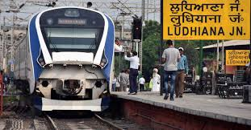
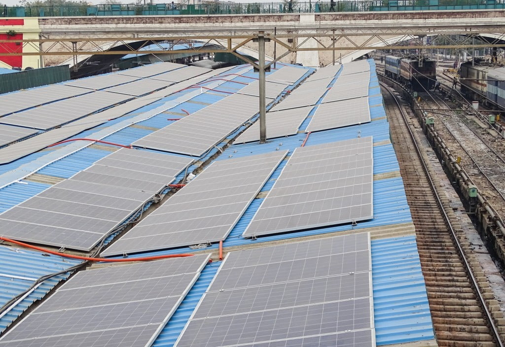

Rail zones of India
There are 18 Rail Zone in India
- Northern Railway
- North Western Railway
- North Eastern Railway
- North Central Railway
- Northeast Frontier Railway
- South Central Railway
- South Coast Railway
- South East Central Railway
- South Eastern Railway
- South Western Railway
- Southern Railway
- Konkan Railways
- West Central Railway
- Western Railway
- Central Railway
- Eastern Railway
- East Coast Railway
- East Central Railway
Northern Railways
The Northern Railway (NR) is one of the 19 Railway zones of India and the northernmost zone of the Indian Railways. It has a legth of about 6969 km and 1142 railway stations It is headquartered at the Baroda House in New Delhi. Officially notified as a new railway zone on 14 April 1952, its origin goes back to 3 March 1859.
Divisions
The Zonal Headquarters Office of Northern Railways is at Baroda House, New Delhi, and five divisional headquarters are located at:
Ambala railway division at Haryana
Delhi railway division at Delhi,
Firozpur railway division at Punjab,
Lucknow NR railway division at UP
Moradabad railway division at UP.
Important Railway Stations
New Delhi, Old Delhi Junction, Hazrat Nizamuddin, Lucknow Charbagh, Anand Vihar Terminus, Delhi SR, Ludhiana Junction, Ambala Cantt. Jn, Moradabad Jn, Bareilly Jn, Rae Bareli Jn,

Firozpur Cantt Jalandhar Cantt, Pathankot Cantt, Chandigarh Jn, Amritsir Jn, Jammu Tawi, Dehradun, Haridwar Jn, Meerut Cantt, Akbarpur Jn, Sultanpur Jn, Shahjehanpur, Ghaziabad Jn, Gurgaon, Roorkee, Bhatinda Jn, Muzaffarnagar, Panipat Jn, Rohtak Jn, Phagwara Jn, Sahranpur Jn, Udhampur etc.
Loco Sheds
Electric Loco Shed, Ghaziabad
Electric Loco Shed, Ludhiana
Electric Loco Shed, Saharanpur
Electric Loco Shed, Khanalampura
Electric Loco Shed, Tughlakabad
Diesel Loco Shed, Tughlakabad
Diesel Loco Shed, Ludhiana
Diesel Loco Shed, Lucknow
Diesel Loco Shed, Roza
Diesel Loco Shed, Alambagh
Solar Powered Stations
Northern Railways in keeping the objective to achieve the target under National Solar Mission to maximize the use of solar power  selected Vivaan Solar, a Gwalior-based company to install a total of five MW rooftop solar power project in 4 major railway stations of NCR namely Anand Vihar, New Delhi, Old Delhi and Hazrat Nizamuddin respectively. The Public Private Partnership to install rooftop solar project was signed in late 2016. The solar power project is to be executed on design, build, finance, operate and transfer (DBFOT) basis and expected to be operational by August 2017. The company will also be responsible for maintaining the respective solar power plants with break up of 1.1 MW, 1.1 MW, 2.2 MW, and 0.6 MW respectively for a period of 25 years.
North Western Railways
The North Western Railway (abbreviated NWR) is one of the 19 railway zones in India. It is headquartered at Jaipur,Rajasthan with 59,075+ employees, 658+ stations and a route length of more than 5761 km across at least some parts of four states of Rajasthan, Gujarat, Punjab and Haryana (c. 2009). NWR operates international rail service Thar Express from Jodhpur to Karachi. This zone is the key enabler of the Delhi–Mumbai Industrial Corridor Project by virtue of running railways 1,500 km long Western Dedicated Freight Corridor.
Divisions
Jaipur Division
Jodhpur Division
Ajmer Division
Bikaner Division
Important Railway Stations
Jaipur Jn, Ajmer Jn, Bikaner Jn, Jodhpur Jn, Barmer, Marwar Jn, Mavli Jn, Udaipur Jn, Lalgarh, Suratgarh Jn, Shri Ganganagar, Alwar Jn, Phulera Jn, Hisar, Abu Road, Rewari Jn, Bandukui Jn, etc.
Loco Sheds
Diesel Loco Shed - Abu Road
Diesel Loco Shed - Bhagat Ki Kothi
Phulera Jn Meter Gauge locos
North Eastern Railways
The North Eastern Railway (abbreviated NER) is one of the 19 railway zones of Indian Railways in India. It is headquartered at Gorakhpur. Zonal Rail Training Institute (ZRTI) is established in district Ghazipur, Uttar Pradesh. Zonal Rail Training Institute (ZRTI) is established in district Ghazipur, Uttar Pradesh. As North Eastern Railway caters to a large area spread from the western part of Uttar Pradesh towards eastern Uttar Pradesh and area comprising western Bihar, it runs many passenger trains for the economically weaker sections. Thus, in its true sense, North Eastern Railway is delivering on the balance between social as well commercial objective of the Indian Railways. The North Eastern Railway was formed on 14 April 1952 by combining two railway systems the Oudh and Tirhut Railway and Assam Railway and the Cawnpore–Achnera Provincial State Railway of the Bombay, Baroda and Central India Railway.
Divisions
Lucknow NER
Izzatnagar
Varanasi
Important Stations
Varanasi Jn, Gorakhpur Jn, Chappra Jn, Lucknow Jn, Azamgarh, Ballia, Padrauna, Belthara Road, Deoria Sadar, Mau Junction, Siwan Junction, Gonda Junction, Khalilabad, Kathgodam, Rudrapur City, Ghazipur City (GCT),Banaras (BSBS), Varanasi city (BCY), Bhatni (BTT), Babhnan (BV), Suraimanpur, etc
Loco Sheds
Izzatnagar Diesel loco shed
Diesel Loco Shed Gonda
Electric Loco Shed - Gonda
Electric Loco Shed - Gorakhpur
North Central Railway
The North Central Railway (abbreviated NCR) is one of the 19 railway zones in India. The largest railway station in NCR is Kanpur Central. It is headquartered at Prayagraj.The zone spreads across all three divisions mentioned above. It extends from Ghaziabad (excl.) in the north to Mughalsarai (excl.) in the east on New Delhi-Howrah trunk route and from Palwal (excl.) to Bina (excl.) on New Delhi Mumbai/Chennai corridor. North Central Railway span parts of UP, Haryana, Rajasthan and Madhya Pradesh with about 3062 route km of BG comprising predominantly double line- electrified sections defining the sides and diagonals of the Golden Quadrilateral.[4] NCR consists of 202 main line stations & 221 branch line stations. This zone forms a corridor for trains almost directions viz. East to north and north to east a total of 29 pairs of mail-express trains daily west/south to north and north to south/west total 37 pairs of M/Exp. Trains daily east to Southwest and southwest to east a total of 25 pairs of Mail/Express trains daily East to West & West to East a total of 12 pairs of Mail/Express Trains Daily.
Divisions
Prayagraj Division
Agra Cantt Division
Jhansi Division
Important Stations
Prayagraj Jn, Kanpur Central, Agra Cantt, Gwalior Jn, Jhansi Jn, Farrukhabad Jn, Kasganj Jn, Orai Jn, Etawah Jn, Agra Fort, Mathura Jn, Lalitpur Jn, Morena, Bhartpur Jn, Mirzapur Jn, Tundla Jn, Aligarh Jn, etc.
Loco Shed
Electric Loco Shed - Kanpur
Electric Loco Shed - Jhansi
Diesel Loco Shed - Jhansi
North East Frontier Railway
The Northeast Frontier Railway (abbreviated NFR) is one of the 19 railway zones of the Indian Railways. It is headquartered in Maligaon, Guwahati in the state of Assam, and responsible for operation and expansion of rail network all across Northeastern states and some districts of eastern Bihar and northern West Bengal. The area of Northeast Frontier Railway operations is characterized by exceptional beauty and at the same time by some of the most arduous terrain. This difficult terrain limits the rail network expansion, and the only state with a decent rail network is Assam. The network is not broad gauge in many parts and the rail lines are antiquated with speeds at some sections being limited to a maximum of 30 km/h (19 mph). Before the Saraighat Bridge was constructed, passengers had to get down on the Amingaon side of the Brahmaputra and take a ferry across to Pandu Junction from where they could resume their journey. The majority of the tracks have been converted to BG and electrification is in process starting from Katihar till Guwahati.
Divisions
Katihar Division
Tinsukia Division
Alipurdar Division
Rangiya Division
Lumding Division
Important Stations
Guwahati, Kamakhya Jn, Silliguri Jn, New Jalpaiguri Jn, Rangiya Jn, New Tinsukia Jn, Malda Town, Lumding Jn, New Cooch Behar Jn, New Bongaigaon Jn, Silchar, Agartala, Mariani Jn, Badarpur Jn, Katihar Jn, Alipurdar Jn, Dimapur, etc.
Loco Sheds
Diesel Loco Shed - Silliguri
Diesel Loco Shed - Malda Town
Diesel Loco Shed - New Guwahati
Diesel Loco Shed - Mariani
Electric Loco Shed - Malda Town
Darjiling Himalayan Railways
The Darjeeling Himalayan Railway is maintained and governed under the responsibility of Katihar division.  It ascends 6,850 feet (2,090 m) from New Jalpaiguri; the climb begins at Sukna, continues uninterruptedly to Ghum (7,407 ft or 2,258 m) and descends the final 5 miles (8.0 km) to Darjeeling. After independence, India's partition resulted in the isolation of the Northeast region. Consequently, the DHR was merged into Assam Railways, it was closed for the construction of the Assam–Bengal link line and one of its extension lines to Kishanganj was converted to metre gauge. DHR's other extension line to Kalimpong was washed away due to floods. On reopening, the DHR was merged with North Eastern Railway in 1952 and later into Northeast Frontier Railway in 1958.
It ascends 6,850 feet (2,090 m) from New Jalpaiguri; the climb begins at Sukna, continues uninterruptedly to Ghum (7,407 ft or 2,258 m) and descends the final 5 miles (8.0 km) to Darjeeling. After independence, India's partition resulted in the isolation of the Northeast region. Consequently, the DHR was merged into Assam Railways, it was closed for the construction of the Assam–Bengal link line and one of its extension lines to Kishanganj was converted to metre gauge. DHR's other extension line to Kalimpong was washed away due to floods. On reopening, the DHR was merged with North Eastern Railway in 1952 and later into Northeast Frontier Railway in 1958.
South Central Railways
The South Central Railway (abbreviated SCR) is one of the 19 zones of Indian Railways. The jurisdiction of the zone is spread over the states of Telangana, Maharashtra, Karnataka, Andhra Pradesh and Madhya Pradesh.[2] It has three divisions under its administration, which include Secunderabad, Hyderabad and Nanded.[3] It was re-organized in 2019 and the divisions of Vijayawada, Guntur and Guntakal railway divisions were separated to form South Coast Railway zone.[4] Secunderabad railway station is the current headquarter and Gajanan Mallya is the present general manager of the zone.
Divisions
Secunderabad Division
Hyderabad Division
Nanded Division
Important Stations
Secunderabad Jn, Hyderabad, Hazur Saheb Nanded, Kazipet Jn, Nizambad Jn, Kurnool City, Kamareddi, Vikarabad Jn, Bidar, Karimnagar, Pedapalli Jn, Mudkhed Jn, Adilabad, Ramagundam, Purna Jn, Sirpur Kaghaznagar, Kacheguda, Raichur Jn, Nandyal Jn, Yerraguntla Jn, etc.
Loco Sheds
Electric Loco Shed - Lallaguda
Diesel Loco Shed - Moula Ali
Diesel Loco Shed - Kazipet
Electric Loco Shed - Kazipet
Hyderabad Multi Model Transport System
The Hyderabad Multi-Modal Transport System, commonly abbreviated MMTS, is a suburban rail system in Hyderabad, India.[3] A joint venture of the government of Telangana and the South Central Railway, it is operated by the latter. The 50-kilometre (31 mi) system operates on three main routes: Falaknuma–Lingampalli, Hyderabad–Falaknuma and Hyderabad–Lingampalli. The first phase was opened to the public on 9 August 2003 by Deputy Prime Minister of India L.K. Advani.[4] The second phase was opened by N.Chandrababu Naidu, chief minister of Andhra Pradesh.[5][6] The system has three lines, with total length of 44 kilometres (27 mi). In May, 2010, Indian Railways decided to take over the 104-kilometre (65 mi) Phase II project at an estimated cost of ₹ 641 crore. The Railway Board cleared the second phase after the state government agreed to fund two-thirds of the cost, and it is under construction.
South Coast Railway
South Coast Railway Zone (SCoR) has been announced as the newest railway zone of the Indian Railways and is headquartered at Visakhapatnam, Andhra Pradesh. The formal notification for operationalization of this Zone is yet to be issued. South Coast Railway will be headquartered at Visakhapatnam and have three divisions. The existing Waltair division will be bifurcated into two parts. The Andhra Pradesh part of the division, that includes Visakhapatnam district, Vizianagaram district, and a part of Srikakulam district will be merged into neighbouring waltair division. The other part of Srikakulam district will be converted into a new division with headquarter at Rayagada under East Coast Railway (ECoR).[2] South Coast Railway spreads over the states of Andhra Pradesh, Karnataka and Telangana (except Kurnool of Hyderabad division and Jaggaiahpet of Secunderabad division).It also covers a minor portion of Karnataka and Tamil Nadu. The 1,106 route km of the present Waltair division is proposed to be distributed between East Coast Railway – Rayagada division (541 km), Khurda division (115 km) and Vijayawada division (450 km). With the proposed jurisdictions, SCoR will have division-wise route km and Running track km as: Vijayawada 1,414 and 2,631 respectively, Guntakal 1,452 and 2,145 and Guntur 630 and 661 respectively.
Divisions
Waltair (Vishakhapatanam) Division
Vijayavada Division
Guntur Division
Guntakal Division
Important Stations
Vijayavada Jn, Guntur Jn, Guntakal Jn, Vishakhapatanam, Vizianagaram Jn, Renigunta Jn, Tirupati, Gudur Jn, Ongole, Kakinada Town, Bhimavaram Town, Srikakulam Road, Kadapa, Dhone Jn, Samalkot Jn, Rajahmundry, Eluru, Anakapalle, Duvvada, Gudivada Jn, Nidadavolu Jn, Parvatipuram Town,
Loco Sheds
Electric Loco Shed - Vijayavada
Electric Loco Shed - Vishakapatanam
Diesel Loco Shed - Guntakal
Diesel Loco Shed - Gooty
Diesel Loco Shed - Vishakapatanam
Diesel Loco Shed - Vijayavada
Wi-Fi Stations
Many railway stations in South Coast Railway Zone are Wi-Fi enabled, provided by Railwire in association with Google which are as follows - Visakhapatnam, Vijayawada Junction, Gudivada Junction, Guntur Junction, Tirupati, Rajahmundry, Kakinada Town, Nellore, Srikakulam Road, Bhimavaram Town, Samalkot Junction, Eluru, Kadapa, Proddatur, Renigunta Junction, Anantapur, Ongole, Guntakal Junction, Gudur Junction, Tadepalligudem, Tenali Junction, Tuni, Vizianagaram, Chirala, Nidadavolu Jn, Kakinada Town, etc.
South East Central Railway
The South East Central Railway (abbreviated SECR) is one of the 19 Railway Zones in India. The Zone Office is headquartered at Bilaspur and comprises the Bilaspur, Nagpur and Raipur Division. This Zone was formerly part of the South Eastern Railway. It was inaugurated on 20 September 1998 and dedicated to the nation on 1 April 2003.
Divisions
Bilaspur Division
Raipur Division
Nagpur SEC Division
Important Stations
Bilaspur Jn, Raipur Jn, Durg Jn, Gondia Jn, Bhilai Power House, Rajnandgaon, Bhandara Road, Dongargarh, Raigarh Jn, Gevra Road, Champa, Anuppur, Itwari, etc.
Loco Sheds
Electric Loco Shed - Bhilai
Electric Loco Shed - Bilaspur
Electric Loco Shed - Raipur
Diesel Loco Shed - Raipur
Diesel Loco Shed - Motibagh
South Eastern Railway
The South Eastern Railway (abbreviated SER) is one of the 19 railway zones in India and Part of Eastern Railways. It is headquartered at Garden Reach, Kolkata, West Bengal, India. It comprises Adra railway division, Chakradharpur railway division, Kharagpur railway division and Ranchi railway division. The South Eastern Railway caters to the states of West Bengal, Jharkhand and Odisha. S.E. also runs regular electric multiple units (EMU) services to areas adjacent to Kolkata, from Howrah to Kharagpur, Amta, Medinipur, Tatanagar, Balasore, Rourkela and Santragachi to Shalimar. It also handles major freight traffic to Kolkata and Haldia and Howrah to Digha and Mecheda to Digha.
Divisions
Kharagpur Division
Chakradharpur Division
Adra Division
Ranchi Division
Important Stations
Kharagpur Jn, Adra Jn, Ranchi Jn, Bokaro Steel City, Chakradharpur, Tatanagar Jn, Bondamunda, Amta, Medinipur, Haldia, Balasore, Rourkela, Shalimar, Digha, Hatia,
Loco Sheds
Electric Loco Shed - Tatanagar
Electric Loco Shed - Bokaro Steel City
Electric Loco Shed, Santragachi
Electric Loco Shed, Rourkela
Electric Loco Shed, Bondamunda
Electric Loco Shed, Kharagpur
Electric Loco Shed, Ispatnagar
Diesel Loco Shed, Bondamunda
South Western Railways
The South Western Railway (SWR) is one of the 19 railway zones in India, headquartered at Hubballi in Karnataka State. SWR was created from carving out the routes from Southern Railways, South Central Railways and Central Railways in 2003. The South Western Railway zone came into existence on 1 April 2003 by bifurcating Mysuru and Bengaluru divisions from Southern Railway along with Hubballi division from South Central Railway. It is headquartered at Hubballi and comprises three divisions namely Hubballi, Mysuru, and Bengaluru. The fourth division at Kalaburagi was slated to be the fourth division which was supposed to be carved out from Hubli, Secunderabad, Guntakal and Solapur divisions. Currently the divisional office at Kalaburagi is on hold due to operational constraints. South Western Railway covers most of the railway lines in the state of Karnataka and Goa except the Konkan Railway line, parts of Sri Sathya Sai district and Chittoor district in Andhra Pradesh, Krishnagiri district, parts of Dharmapuri district and Tirupathur district of Tamil Nadu.
Divisions
Bengaluru Division
Mysuru Division
Hubballi Division
Important Stations
KSR Bengaluru City Jn, Yeshvantpur Jn, Bengaluru Cantt, Sir M Vishveshwariah Terminus, Banaswadi, Krishnarajapuram Jn, Hassan Jn, Arasikere Jn, Birur Jn, Tumkur, Tiptur, Kunigal, Shravanabelagola, Sakleshpur, Subrahmanya Road, Kabaka Puttur, Kadur Jn, Chikjajur Jn, Chitradurga, Shivamogga Town, Shivamogga, Davangere, Harihar, Haveri, Hubballi Jn, Dharwad, Londa Jn, Belagavi, Gadag Jn, Koppal, Hospet Jn, Rayadurg Jn, Ballari Jn, Vijayapura, Bagalkote, Bangarpet Jn, Yelahanka Jn, etc.
Loco Sheds
Electric Loco Shed - Krishnarajapuram
Diesel Loco Shed - Krishnarajapuram
Diesel Loco Shed - Hubballi
Sir M. Visvesvaraya Terminal - World Class Terminal Station
Sir M. Visvesvaraya Terminal, Bengaluru railway station (station code: SMVB) is an Indian Railways train station located in Baiyyapanahalli, Bangalore in the Indian state of Karnataka. The new station was constructed at a cost of ₹314 crores. The station has VIP lounges, food courts, escalators and air conditioning waiting rooms. According to railways officials It was first air-conditioned railway terminal in South India. It was also first green field project for Indian railways to construct a world class terminal.[2] Work was completed in the early 2021, but there is more than 18 months delay in opening of railway station. Railway officials cited the COVID-19 pandemic and lack of connectivity as the main reasons for delay, but inside sources claimed the delay was to allow the prime minister to open the station. Commercial operations began on 6 June 2022 with Ernakulam Tri-Weekly Express.
Southern Railways
The Southern Railway (abbreviated SR), headquartered at Chennai, is one of the 19 zones of Indian Railways. It is the earliest of the 19 zones of the Indian Railways created in independent India. It was created on 14 April 1951 by merging three state railways, namely, the Madras and Southern Mahratta Railway, the South Indian Railway Company, and the Mysore State Railway. The South Indian Railway was originally created in the British colonial times as Great Southern of India Railway Co founded in Britain in 1853 and registered in 1859. Its original headquarters was in Tiruchirappalli (Trichy) and was registered as a company in London only in 1890. At present, after re-organization of existing railway zones and creation of new zones undertaken by the Indian Railways between 2002 and 2003, Southern Railway has emerged as the 4th largest zone after undertaking some gauge conversion projects and creation of new lines.[2] The trains operated by the southern railway are rated the cleanest as well as cleanly maintained trains of the Indian Railways. It covers the states of Tamil Nadu, Kerala, Puducherry and small portions of Andhra Pradesh and Karnataka. More than 50 crore passengers travel on the network every year. Andaman and Nicobar areas also to be covered under the new railway project sanctioned for Andaman and Nicobar Islands.
Divisions
Palakkad Division
Salem Division
Thiruvananthapuram Division
Chennai Division
Madurai Division
Thiruchirapalli Division
Important Stations
Thiruvananthapuram Central, MGR Chennai Central, Chennai Egmore Mangalore Central, Tambaram, Trissur, Kottayam, Kozhikode, Kannur, Ernakulam Jn, Mangalore Jn, Kollam Jn, Kayamkulam Jn, Shoranur Jn, Villupuram Jn, Salem Jn, Erode Jn, Coimbatore Jn, Podanur Jn, Dindigul Jn, Madurai Jn, Chengalpattu Jn, Viruddhachalam Jn, Virudunagar Jn, Thiruchirapalli Jn, Palakkad Jn, Tirunelveli Jn, Nagarcoil Jn, Senkottai, etc.
Loco Sheds
Diesel Loco Shed - Golden Rock
Diesel Loco Shed - Ernakulam
Diesel Loco Shed - Erode
Diesel Loco Shed - Tondiarpet
Electric Loco Shed - Royapuram
Electric Loco Shed - Arakkonam
Electric Loco Shed - Erode
Steam Loco Shed - Coonoor